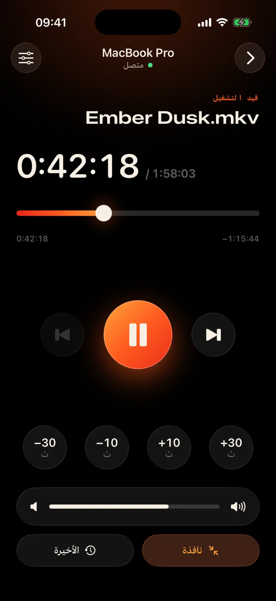
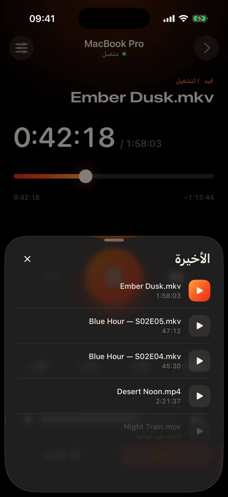
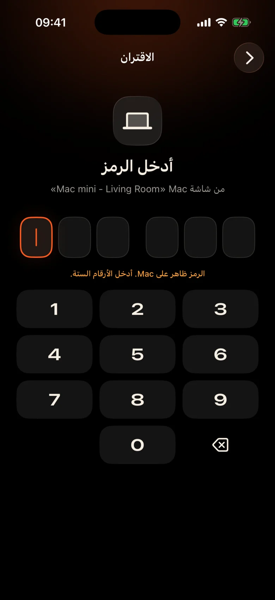

Mac موجود في جميع أنحاء الغرفة
يتم توصيله بجهاز العرض عن طريق الحائط. كل توقف مؤقت يعني النهوض والعثور على لوحة التتبع في الظلام والتحديق في شريط التحكم الصغير.
Kinrox: انقر مؤقتًا على الهاتف الذي في يدك.
يقوم Kinrox بتشغيل أي فيديو على Mac - ويحول iPhone إلى جهاز التحكم عن بعد الخاص به. MacBook على جهاز العرض، وأنت على الأريكة: توقف مؤقتًا، أو ارجع للخلف لمدة 10 ثوانٍ، أو اخفض مستوى الصوت أو ابدأ الحلقة التالية دون مغادرة البطانية.


يتم توصيله بجهاز العرض عن طريق الحائط. كل توقف مؤقت يعني النهوض والعثور على لوحة التتبع في الظلام والتحديق في شريط التحكم الصغير.
Kinrox: انقر مؤقتًا على الهاتف الذي في يدك.
همسات في أحد المشاهد، وانفجارات في المشهد التالي، وشخص نائم بالفعل في الغرفة المجاورة.
Kinrox: شريط تمرير مستوى الصوت أسفل إبهامك مباشرةً.
لوحات ويب تحتوي على عناوين IP وكلمات مرور، وعلامة تبويب متصفح تنام، وأزرار مصممة للمكتب - وليس للأريكة.
Kinrox: يعثر على Mac الخاص بك بنفسه، ويقترن برمز واحد.

أهداف كبيرة، وموضوع دافئ داكن، ونقرة خفيفة من اللمس تحت كل ضغطة. يمكنك استخدامه دون النظر بعيدًا عن الفيلم.
أزرار كبيرة يسهل الضغط عليها حتى وأنت نصف نائم.
غاب عن الخط؟ بنقرة واحدة مرة أخرى. تخطي المقدمة مع اثنين.
حجم الصوت الخاص بـ Kinrox، من 0 إلى 100. ويظل حجم نظام Mac كما هو.
الملف السابق والتالي من نفس المجلد، بالترتيب Finder.
اختر شيئًا شاهدته من قبل، فهو يفتح على Mac.
اسحب المخطط الزمني إلى أي لحظة، وقم بالتبديل إلى وضع ملء الشاشة من الأريكة.
لا توجد عناوين IP، ولا كلمات مرور، ولا حساب. بعد الرمز الأول، يقوم iPhone بإعادة الاتصال بنفسه.
اسحب ملفًا إلى Kinrox أو اضغط على ⌘ O. الخادم البعيد قيد التشغيل بشكل افتراضي.
تظهر Kinrox من تلقاء نفسها عندما يكون كلا الجهازين متصلين بنفس شبكة Wi-Fi.
يُظهر Mac رمزًا يعيش لمدة دقيقتين. ثلاث محاولات خاطئة وذهبت.


يريد Alex’s iPhone التحكم في Kinrox. أدخل هذا الرمز على هاتفك.
 تنتهي صلاحية الرمز خلال 1:47
تنتهي صلاحية الرمز خلال 1:47
الفيديو هو الواجهة. تظهر طبقة رقيقة من الزجاج عندما تحتاج إليها وتختفي بعد ثلاث ثوانٍ.

مبني على libmpv، المحرك وراء mpv وIINA. اختر الصوت والترجمة المضمنة أو الخارجية. يتعامل VideoToolbox مع فك تشفير الأجهزة.
يقوم Kinrox بترتيب مقاطع الفيديو في المجلد ويبدأ المقطع التالي عندما تنتهي الحلقة - "2" قبل "10"، مثل Finder.
لوحة المفاتيح ⏯، ومركز التحكم، والتحكم في التشغيل الآن Kinrox. ما يصل إلى 20 ملفًا حديثًا ينتظر على شاشة البداية.
يتبادل Mac وiPhone أوامر التشغيل مباشرة عبر شبكتك المحلية. تبقى مقاطع الفيديو الخاصة بك على Mac.
الاكتشاف عبر Bonjour، الاتصالات فقط من الشبكة الفرعية الخاصة بك. يتم رفض العناوين العامة والخلوية.
ينتقل كل أمر في قناة مشفرة. توجد الرموز المميزة للاقتران في Keychain على كلا الجهازين.
X25519HKDF-SHA256ChaCha20-Poly1305لا توجد حسابات أو تحليلات الاستخدام. يتحقق Mac من موجز التحديث العام يوميًا دون معرفات فريدة أو ملفات تعريف النظام. لا يحتوي هذا الموقع على تحليلات أو ملفات تعريف الارتباط.
يرى جهاز التحكم عن بعد العناوين والمدد، ولا يقوم أبدًا بحفظ المسارات. يتم حل مشكلة فتح ملف حديث على Mac.
تمت كتابة Kinrox في Swift 6 وSwiftUI أعلى libmpv. كل سطر من المشغل وجهاز التحكم عن بعد والبروتوكول موجود على GitHub.
البناء من المصدر# Xcode 26.5, XcodeGen and mpv from Homebrew
brew install xcodegen mpv pkg-config
git clone https://github.com/awaik/Kinrox.git
cd Kinrox
cp -n Config/Signing.local.xcconfig.example \
Config/Signing.local.xcconfig
# Set your team: docs/runbooks/RUNBOOK-BUILD-AND-SIGNING.md
./Scripts/check-env.sh
./Scripts/generate.sh
xcodebuild -workspace Kinrox.xcworkspace \
-scheme PlayerMac -configuration Debug \
-destination 'platform=macOS,arch=arm64' \
-derivedDataPath DerivedData build
open DerivedData/Build/Products/Debug/Kinrox.appيعمل التشغيل والتحكم عن بعد دون الوصول إلى الإنترنت عندما يشترك Mac وiPhone في شبكة Wi-Fi. يستخدم Mac HTTPS للتحقق من التحديثات اليومية ويقوم بتنزيل التحديث عندما تختار تثبيته.
نعم. يتم تشغيل Kinrox على أي شيء يعرضه Mac - جهاز عرض، أو تلفزيون عبر HDMI، أو شاشة متصلة بـ AirPlay.
Macs مع Apple silicon على macOS 14 Sonoma أو الأحدث، وiPhones على iOS 17 أو الأحدث. Intel Macs غير مدعومة حتى الآن.
نعم. يقترن كل iPhone مرة واحدة برمزه الخاص؛ يمكن توصيل ما يصل إلى أربعة أجهزة تحكم عن بعد في نفس الوقت. يمكنك إلغاء أي منها في إعدادات المشغل.
نعم. في Mac، استخدم زر الصوت والترجمة أو قوائم الصوت والترجمة. اختر المسارات المضمنة، أو ابحث عن الملفات الخارجية في المجلدات المتداخلة، أو قم بإيقاف تشغيل الترجمة. يمكن لـ Kinrox أن يتذكر اختيارك للحلقة التالية.
لا شيء. Kinrox مجاني ومفتوح المصدر ضمن GNU GPL v3.
Kinrox لـ Mac وiPhone. مجاني ومفتوح المصدر ومصمم ليالي مشاهدة الأفلام.